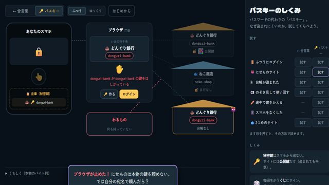
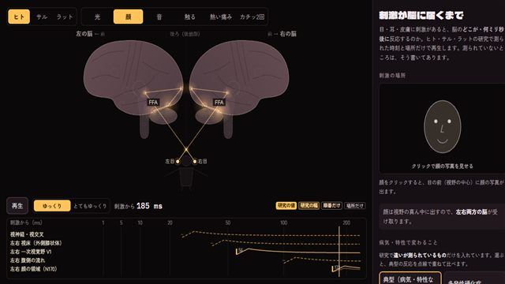
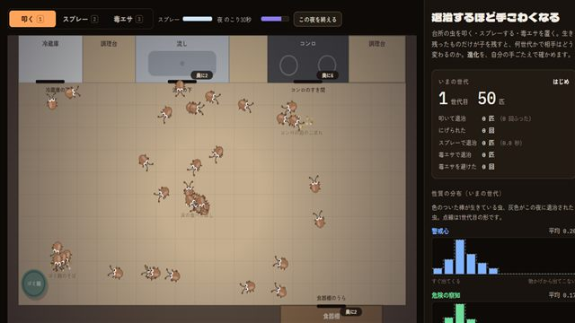

保管庫
ここは、まなびラボの保管庫です。作りかけのアプリや、作ってはみたものの出来がいまひとつで入口に並べるのをやめたアプリを、しまってあります。いちおう動きますが、内容や見た目は途中のままで、これから直すとは限りません。ふだん遊ぶなら入口のアプリをどうぞ。
学習用に簡単にしているところがあります。医療・健康の判断には使えません。



退治するほど手ごわくなる
台所の虫を叩く・スプレーする・毒エサを置く。生き残ったものだけが子を残すと、すばしこい虫・殺虫剤が効かない虫・毒エサを食べない虫が増えていく。進化を自分の手ごたえで確かめる。虫の見た目は「まる」も選べる。
試作（段階Aまで。遊んだときの難しさは調整中）
作成 2026-10-08 ・ 更新 2026-10-08過去の版


極限の世界に置いてみたら
宇宙からマリアナ海溝の底まで、風船・ペットボトル・人・深海魚・クマムシなどを運ぶと、どうなるか。気圧と水圧で縮む・ふくらむ・沸く。
試作（見た目に改善の余地あり）
作成 2026-10-06 ・ 更新 2026-10-07過去の版
まなびラボの入口へ
このサイトでは Google アナリティクスで閲覧の記録を集めています（アクセス解析について）